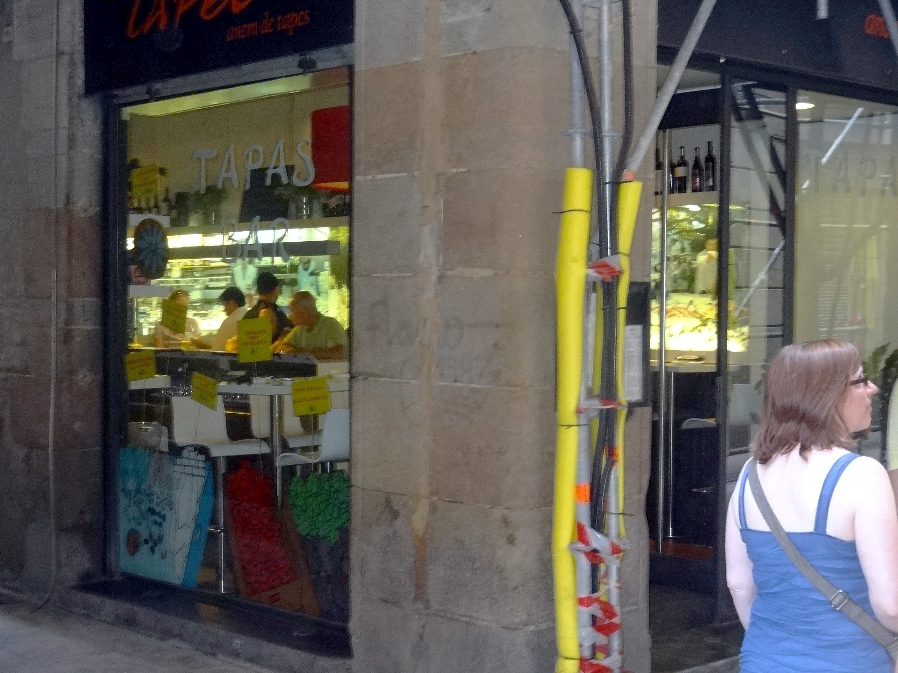
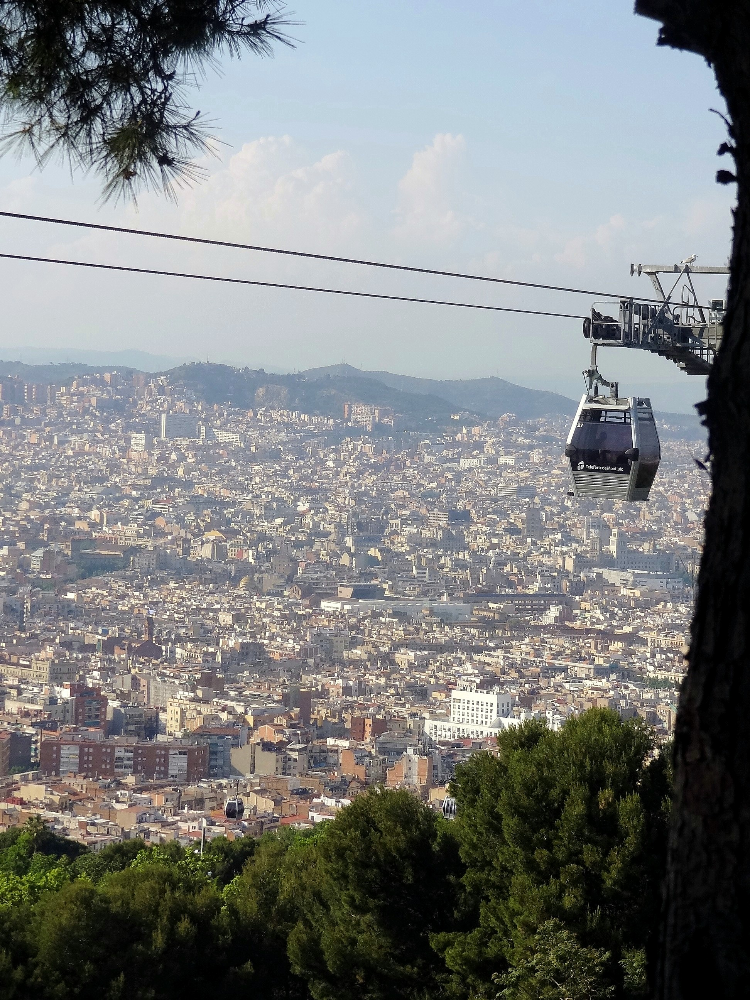
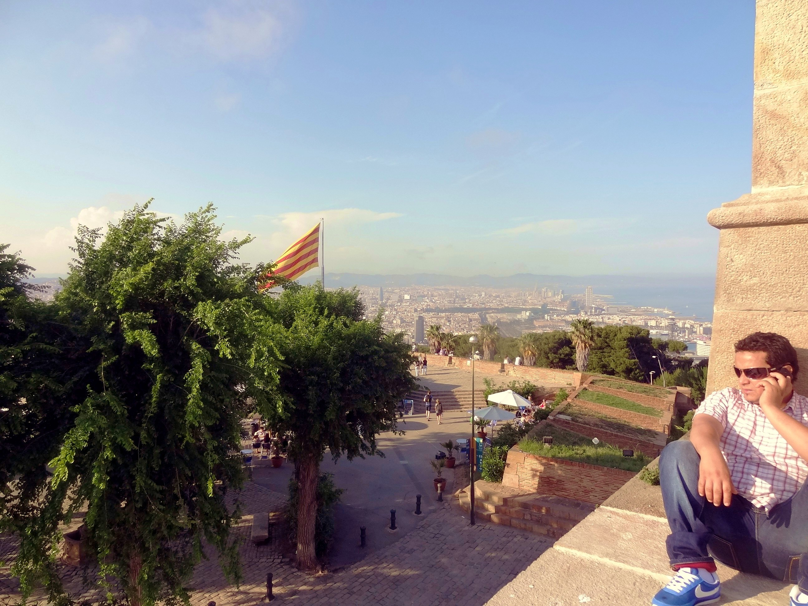
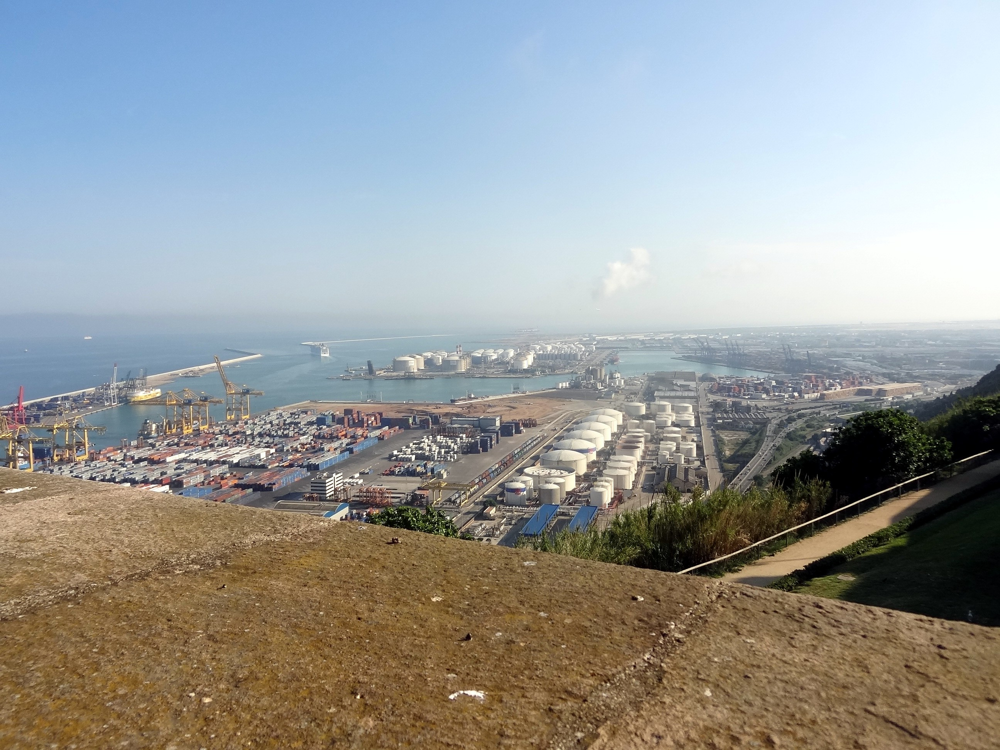
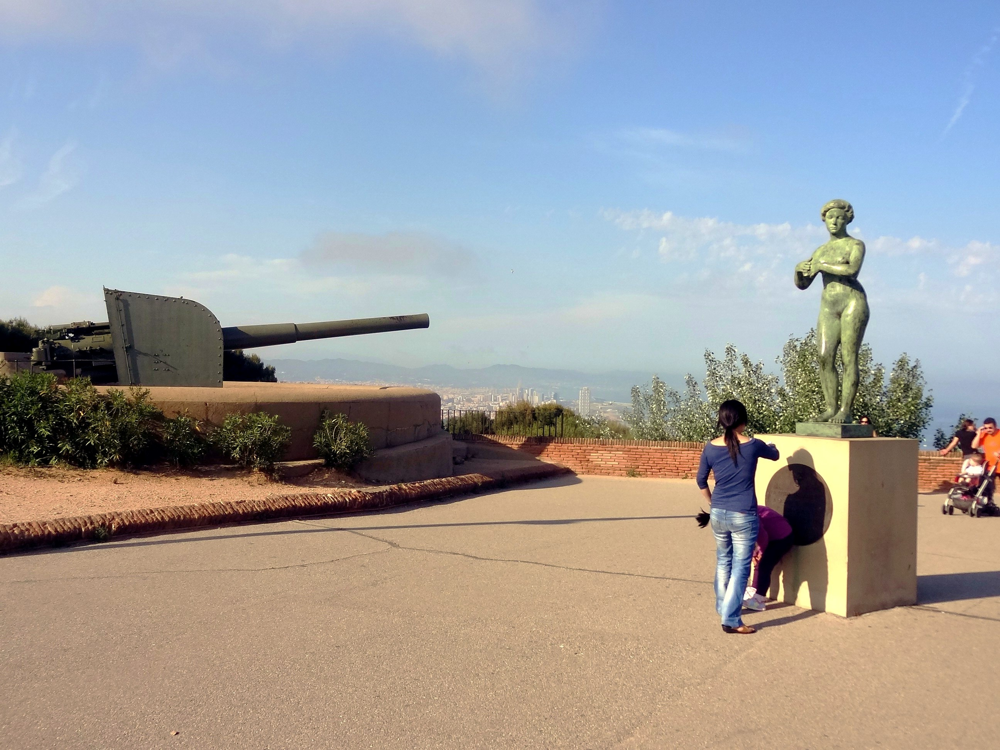
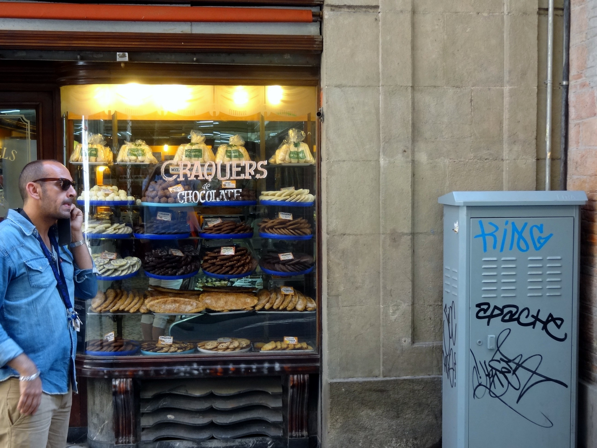
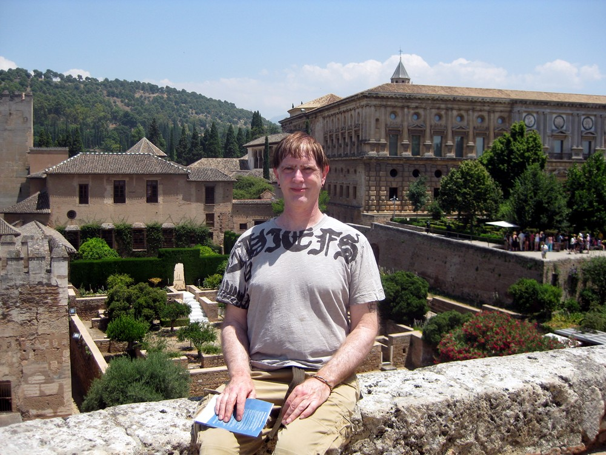
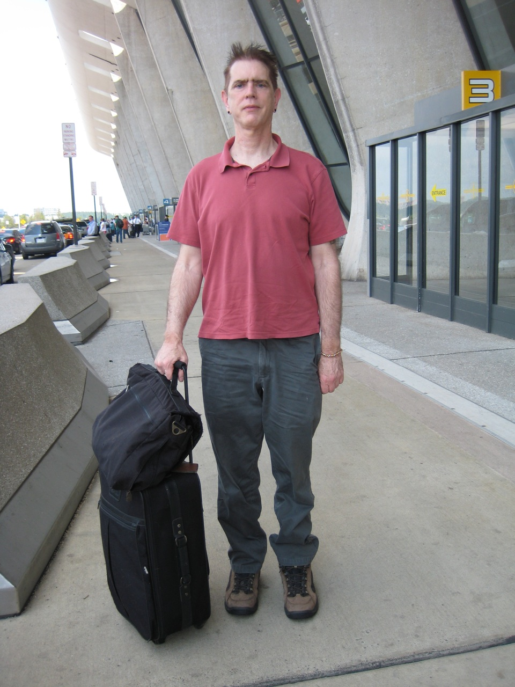
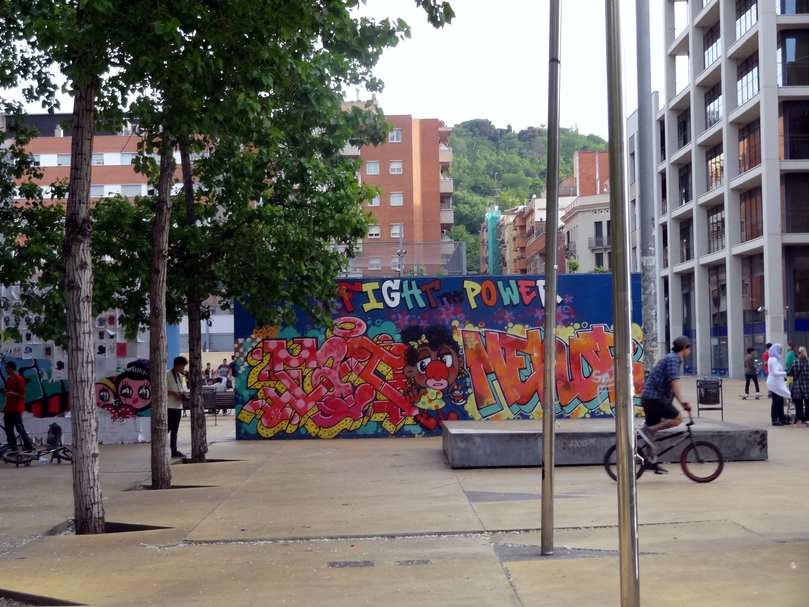
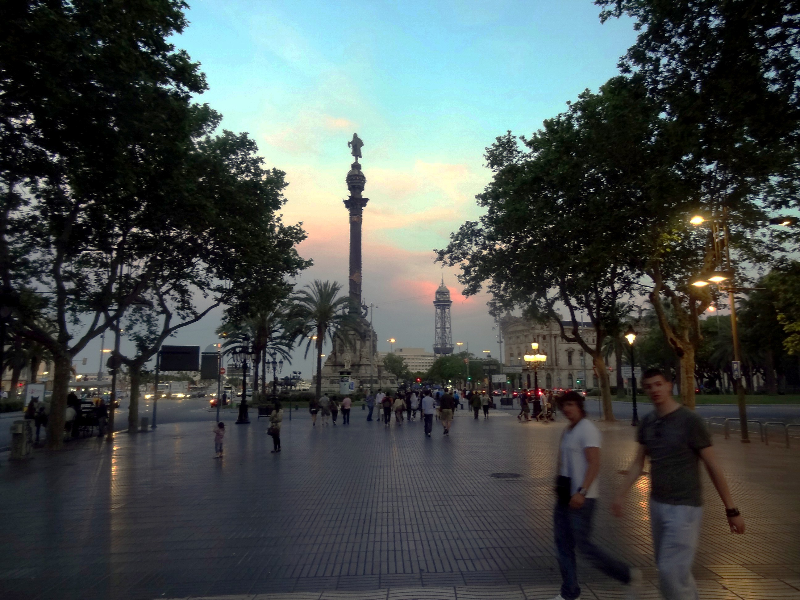

|
||
I started in Barcelona to get the worst of jet lag over in a familiar place. This was visit two and I'd do a third--there's always something more. Last year I figured out what was wrong with my Spanish pronounciation--can't swallow any syllables--so this year everyone heard good Spanish and assumed I was more fluent than I am. Need to quadruple my vocabulary next. And to stop calling el mar la mer because Debussy did.
Left my glasses case in the Madrid airport during the layover. So I put them in my pocket in a gym sock. So no matter how posh the restaurant, out came the gym sock so I could read the menu. If anyone commented, I intended to invoke Dali. So now it's midnight and I've got the hotel window open for sea breeze due to anemic Spanish air conditioning--it's always almost useless--and everyone is happy and loud and there are guitars, I'm going to eat more and sleep better and avoid a big meltdown like last trip. This time I'm eating at 10PM like everyone else and staying up to midnight, rather than falling alseep at 7PM and waking up at 7AM (1AM EDST) like last time.
|
 |
| The new, trendy Tickets tapas bar must have
been disguised as an empty warehouse--I never found it. Ended up at an
Indian restaurant the first night. So I went for Las Tapas, the #2 rated
place one block from the Picasso museum. Ate fried eggplant sticks with
lime butter and lemon cod listening to a Gypsy Kings version of Hotel
California. Top-notch food. Picasso was one of the world's great portrait painters before inventing cubism late in his career as a publicity gimmick. Look in the eyes of one of his portraints for a minute and you'll know what kind of family they grew up in and what to talk to them about. Like Dali, his best works are before he acquired a lot of mannerisms. Turns out cubism wasn't a reaction to the meaninglessness of life in post-WW I Europe, as I'd assumed. It was about the primacy of geometry he observed looking at classical architecture on a trip to Rome. |
|
 |
| Tram to Montjuic Castle (1640). Means either
"Mount Jupiter" or "Mountain of the Jews" depending on which web site
you read. I overstayed and ended up walking down the mountain,
which is better than walking up, I guess. The 1992 Olympic games were
held here, but to get into the stadium you have to buy an expensive
dinner. Know what? Part of the reason I like Barcelona is that
it's a lot like LA, only on a manageable scale. Spanish architecture,
low hills, beach, arts, tourist attractions, Spanish language.
It's a great place to be a tourist. Clueless what it's like to
actually live here. Wondered if I'd happen across one of the
anti-austerity demonstrations that happen regularly in the newspapers.
Didn't. |
|
 |
| View from top. The castle was "used down the centuries to oppress the people", lastly by Franco, said the tour guide before "turning to a more pleasant subject, Montjuic Cemetary". |
 |
| Port from fort. The airport is this
way, you take a 30 min taxi ride in. The things I do for friends--I was
walking around all day with a shirt in a gauche Hard Rock bag, trying to
keep it rolled up so the logo didn't show. Interesting encounter at
the airport. A couple of guys--rumpled, 30s--came up looking
stressed. They didn't speak Spanish so we protocol-negotiated German.
They were, they said, stranded peniless in Barcelona trying to get to
Verona, where a friend would put them up. I gave them about e1.50 and
they seemed geniunely relieved. Scam? Quite possibly. It seemed one of
those situations were it was better to be scammed than wrong. (And there
was an element of these guys are so like--me.) Compare that with Rome, where professional beggars have theatrical stage business--genuflecting with their head off the sidewalk into the gutter, coin cup clutched over their heaeds. One such old woman (Italian babushka, she had the scarf?) came up while I was sitting on some steps and tried persistence--the same Italian phrase over and over. But I'd been trained to be persistence-proof by Rex. All I heard was "meow"..."meow"..."meow". And she looked nothing like me. |
|
 |
| Love and war. Notably, all the gun emplacements were pointed toward the city. |
|
 |
| Temptation resisted in the Gothic barrio. On last year's trip to Spain, I had someone take a pic of me at the Alhambra, and was horrified. The pic below right motivated me to drop more weight. Compare with the pic on the left, taken by Sharon, who dropped me off. Would like to finish up with weight loss this calendar year if at all possible, and get the whole issue behind me. I figure being overweight is like being a meth head, though--it's never really over. I'll be counting calories the rest of my life just to maintain. (My shrink made me a buy a book on body dysmorphic disorder, and is threatening to play the eating disorder card. My response is that my build is mid-range, so I should be mid-range in the BMI table for my height, which is 10 lb less than what I weight now. We're both right--my body image was permanently skewed by daily hate in 6th grade, and yet scientific data supports the reasonableness of what I'm doing. She just hates that I have an out.) |
|
 |
 |
| Before | Ten pounds after |
|
 |
| Don't worry, Compton. Barcelona's got your back. |

Statue of Cristobal Colon at the end of Las Ramblas, a mile-long pedestrian mall
|
|||
|
|